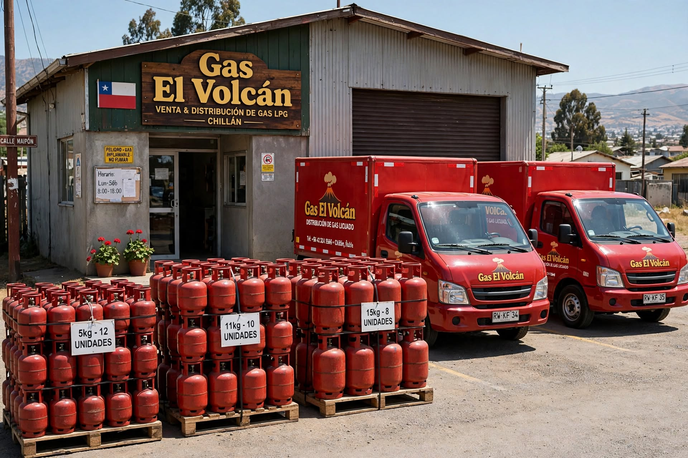

Nuestra Historia
Gas El Volcán nació en 1998 en Chillán como un negocio familiar dedicado a repartir cilindros de gas licuado puerta a puerta en la Región de Ñuble. Durante casi tres décadas hemos crecido a pulso: partimos anotando pedidos en un cuaderno y hoy respondemos entre 80 y 120 pedidos diarios, siempre por teléfono. Este sitio es nuestro primer paso para que puedas pedir tu gas en línea, sin tener que llamar varias veces para saber si ya viene en camino.

Nuestros Fundadores
Somos una empresa familiar: comenzamos con un camión y la idea de que nadie se quedara sin gas en pleno invierno. Hoy la misma familia sigue al frente del negocio, manteniendo el trato cercano que nos caracteriza desde el primer día.
¿Por qué elegirnos?
- 80 a 120 pedidos diarios entregados
- Cilindros de 5kg, 11kg y 15kg, además de accesorios
- Cobertura Chillán y alrededores
- Pago online y contra entrega
Nuestro Compromiso
Pasar del cuaderno a la tecnología para que sepas exactamente cuándo llega tu gas. Sin llamadas perdidas, sin esperas indefinidas.
Equipo Desarrollador
Este sitio fue desarrollado por estudiantes de Ingeniería en Informática de Duoc UC, en el ramo Fullstack II:
- Barbara Oyarzun
- Luis Medina